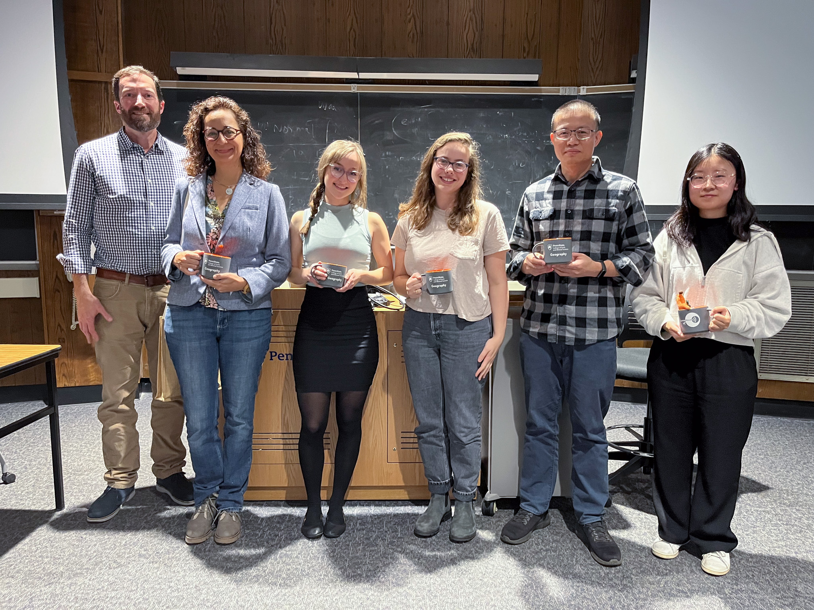

Gallery


×

Coastal freshwater forested wetlands (CFFWs) along the southeastern U.S. are rapidly transforming under the compounded effects of sea level rise, saltwater intrusion, and groundwater decline. These changes have led to the emergence of “ghost forests”—transitional zones of dead or degraded vegetation.
During my time in NASA-JPL’s DEVELOP program, I led a team investigating the long-term vegetation dynamics and environmental drivers of forest decline in the Savannah River watershed. Using 34 years of Landsat satellite data, seasonal vegetation indices (NDVI, EVI), and site-level environmental datasets (e.g., sea level, salinity, groundwater depth), we tracked vegetation stress and land cover change from 1990 to 2024.
This project integrates remote sensing and in situ environmental data to better understand climate-driven degradation of coastal ecosystems. I’m currently leading a first-author manuscript based on this project’s findings.
Assessed long-term vegetation health using Landsat and PlanetScope imagery.
Compared NDVI sensitivity across Landsat 7 ETM+, 8 OLI, and RapidEye/Dove sensors.
Trained random forest models to detect class shifts in vegetation over time.
Analyzed in situ salinity trends alongside vegetative decline to validate SWI correlations.